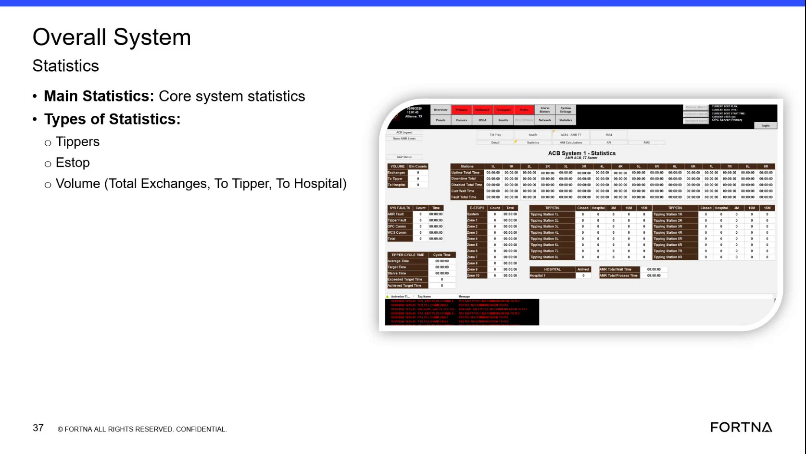

| Procedure ID | proc_interpret_overall_system_statistics_main_statistics_v1 |
|---|---|
| Title | Interpret Overall System Statistics Main Statistics |
| Procedure Type | reference |
| Primary Role | operator |
| Support Safe | Yes |
| Validation Status | needs_sme_review |
| Merge Status | source_finalized |
Use the Overall System Statistics view to identify the documented main statistics categories and read the available E-stop and volume-related metrics shown in the training source.
Use when reviewing the Overall System Statistics area to identify the main statistics or core system statistics shown by the source, including E-stop and volume-related categories.
Responsible role: operator
Instruction:
Open or locate the Overall System Statistics area that shows Main Statistics or core system statistics.
Expected result:
The Overall System Statistics area is visible and the Main Statistics heading or core system statistics content can be seen.
Screens / Images:

Stop or Escalate If:
Responsible role: operator
Instruction:
Identify the listed statistics types in this view, including E-stop and Volume.
Expected result:
The visible statistics types are recognized from the source labels.
Screens / Images:
Stop or Escalate If:
Responsible role: operator
Instruction:
For E-stop statistics, observe the displayed E-stop-related metric shown for the system or tippers using only the values presented on the screen.
Expected result:
The E-stop-related metric is read directly from the displayed view without added interpretation.
Screens / Images:
Stop or Escalate If:
Responsible role: operator
Instruction:
For Volume statistics, identify the documented categories Total Exchanges, To Tipper, and To Hospital.
Expected result:
The three source-supported volume categories are identified in the view.
Screens / Images:
Stop or Escalate If:
Responsible role: operator
Instruction:
Read and record the displayed counts or values for the available categories without inferring additional meanings or actions.
Expected result:
The visible values are recorded exactly as displayed for the available categories.
Screens / Images:
Stop or Escalate If: